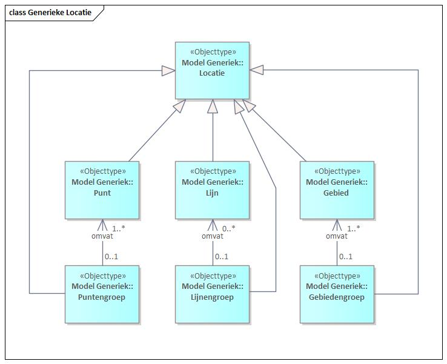
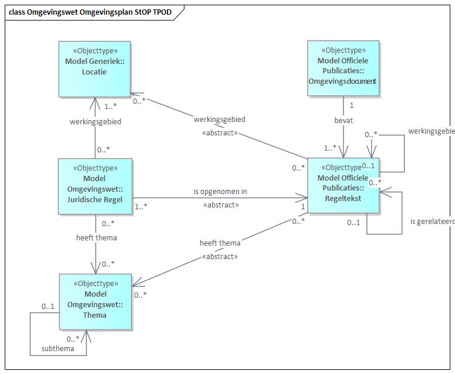
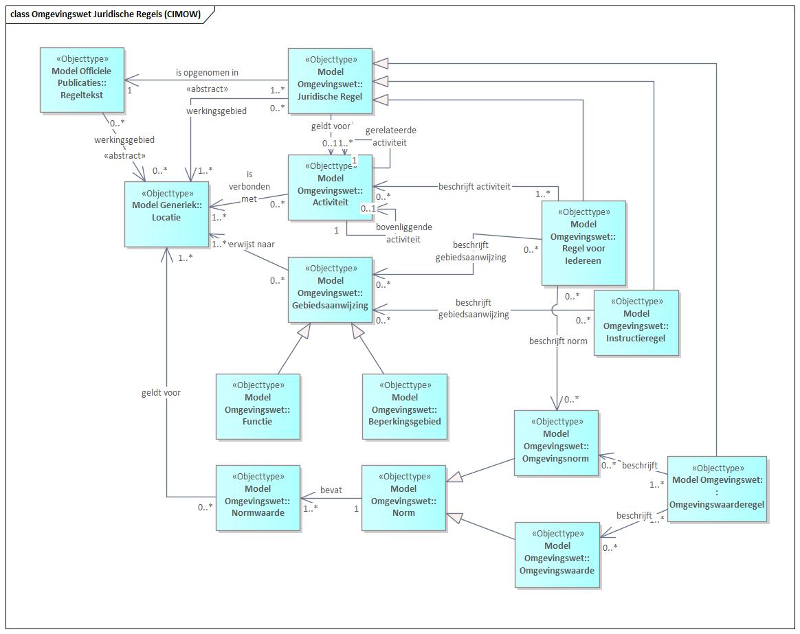
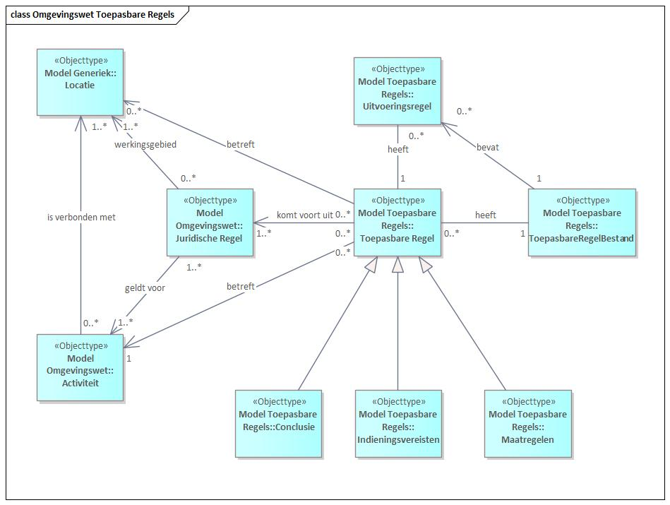
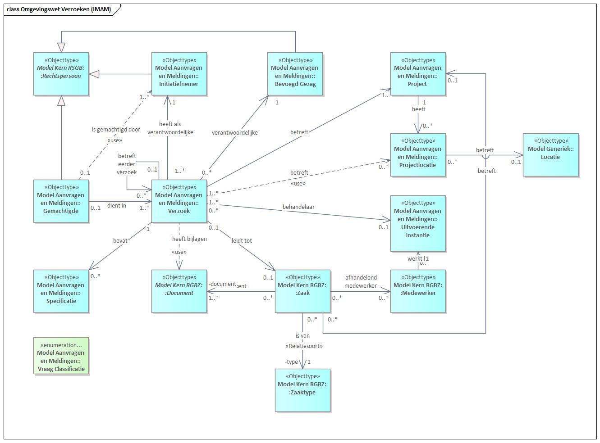
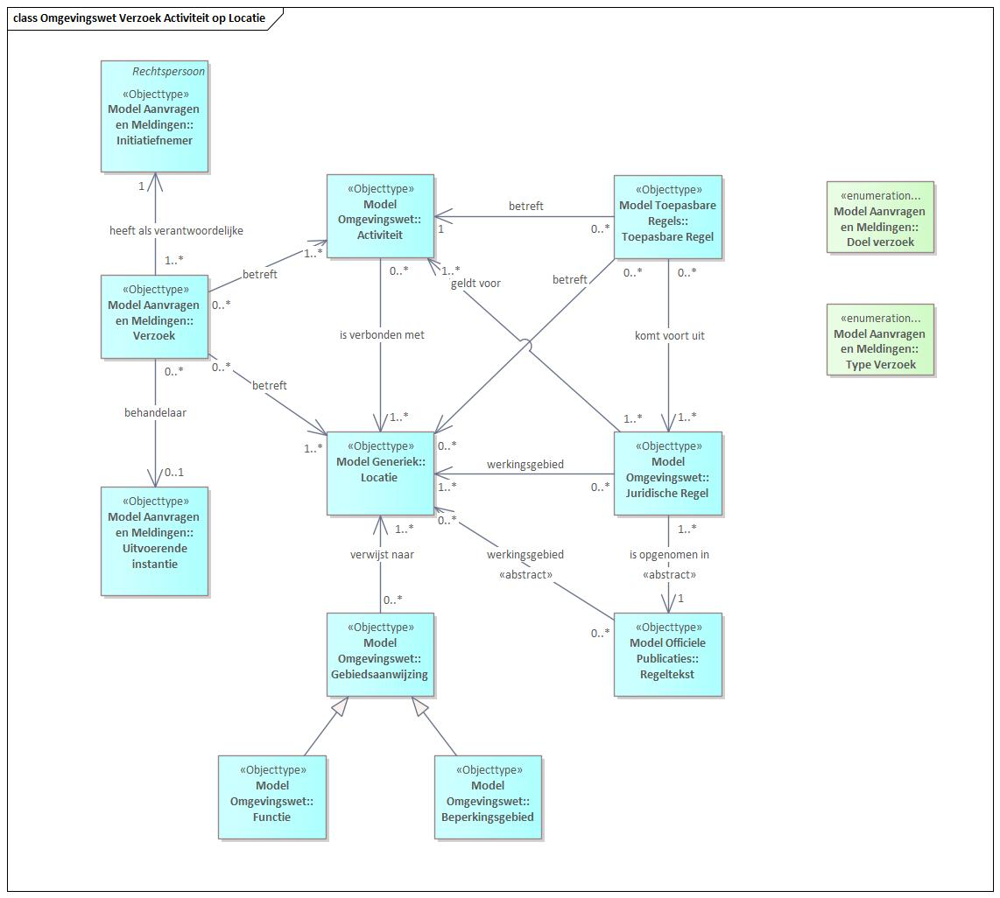

Omgevingswet
De gegevensdefinities bij de omgevingswet zijn opgedeeld naar de verschillende functies zoals die in de vorige paragraaf zijn beschreven, en bijbehorende informatiemodellen. De volgende standaarden en informatiemodellen zijn gebruikt bij het opstellen van de informatiemodellen in deze paragraaf:
- Standaard- en informatiemodel toepasbare regels (STTR en IMTR) versie 1.02. In het kader van de omgevingswet zijn toepasbare regels uitgewerkt conform STTR en IMTR. Deze worden toegepast om vragenbomen in het Omgevingsloket te laten zien. Deze is vanwege de beperkte rijkweidte slechts beperkt overgenomen.
- Standaard en informatiemodel aanvragen en meldingen (STAM en IMAM) versie 0.9. De Standaard aanvragen en meldingen (STAM) en het bijbehorende informatiemodel (IMAM) helpen bij het afleveren van een vergunningaanvraag of melding in het kader van de omgevingswet bij overheden.
- Standaard officiële publicaties (STOP/TPOD) Versie 0.98beta. Voor het valideren en publiceren van omgevingswetbesluiten. Vanwege de beperkte rijkweidte is deze slechts beperkt overgenomen.
- Conceptueel Informatiemodel Omgevingswet CIMOW Versie CIMOW v0.98-kern. Het Conceptueel Informatiemodel voor de Omgevingswet (CIMOW) beschrijft het domein van de Omgevingswet. Dit beperkt zich tot de informatie die in dit domein wordt vastgelegd en vastgesteld en in ketens wordt uitgewisseld ten behoeve van het digitaal stelsel van de Omgevingswet (DSO).
Generieke Locatie
Locaties hebben binnen de Omgevingswet een centrale rol, en kennen hun plek binnen alle informatiemodellen. Om deze reden zijn deze generiek beschreven.

Er worden 6 soorten ‘Locatie’ onderkend: een ‘Punt’, een ‘Lijn’ een ‘Gebied’ en groeperingen van de drie voorgaanden. Steeds wordt verwezen naar ‘Locatie’ en in de praktijk kan dat een van deze 6 soorten zijn. Alle 6 kunnen op een kaart worden afgebeeld.
Ruimtelijke Plannen onderhouden en publiceren
Ruimtelijke plannen worden opgesteld en gecommuniceerd aan de DSO-LV conform de Standaard voor Officiële Publicaties (verder: STOP). Voor de Omgevingswet is een specificatie/verbijzondering van STOP vastgelegd in het Conceptueel InformatieModel Omgevingswet (verder: CIMOW).
In Figuur 5 is de relatie weergegeven tussen de ‘Regelteksten’ uit STOP, het ‘Omgevingsdocument’ en de ‘Juridische Regel’, de ‘Locatie’ en ‘Thema’s’.

Conform STOP bestaat een ‘Omgevingsdocument’ uit meerdere ‘Regeltekst’-objecten, welke gerelateerd aan elkaar kunnen zijn, of als werkingsgebied andere regelteksten kunnen hebben. Deze tekstelementen worden geannoteerd en uit die annotatie worden ‘Juridische Regel’, de ‘Locatie’, ‘Thema’s’ en andere CIMOW-objecttypes gegenereerd. Omdat het hier niet om een reguliere relatie gaat, maar om generatie op basis van annotatie is de relatie als abstract aangeduid.
In de volgende figuur zijn alle objecttypes te zien die op basis van annotatie worden gegenereerd uit de omgevingsdocumenten, en waarmee de juridische werkelijkheid om de omgevingsplannen wordt weergegeven.

Dit diagram geeft een overzicht van alle onderkende objecttypen, zoals een activiteit, een regel, een functie, enzovoorts. Hierover wordt informatie bijgehouden, en worden verschillende soorten onderkend. Zo is een functie ‘horeca in het centrumgebied’ niet gelijk aan de functie ‘natuurgebied met water’, maar beide zijn wel een functie en worden informatiekundig als gelijksoortig gezien, te weten als een functie met een vrij te kiezen naam. Een ‘Regeltekst’ is de kleinste zelfstandige eenheid van (een of meer) bij elkaar horende Juridische regels in een tekst met Artikelstructuur, te weten een artikel of een lid. Een ‘Juridische Regel’ is opgenomen in een ‘Regeltekst’ (abstract vanwege annotatie). Een ‘Juridische Regel’ is regel met juridische werkingskracht. Een regel betreft binnen de Omgevingswet veelal activiteiten, en/of normen en/of gebiedsaanwijzingen. Er worden drie soorten juridische regels onderscheiden:
- Regel voor iedereen: Het betreft hier een algemeen geldende regel met directe werking voor eenieder. Anders gezegd, deze regels gelden voor eenieder in Nederland, inclusief voor de bevoegde gezagen zelf.
- Instructieregel: Het betreft hier juridische regel die instructie geeft aan andere overheden, gericht op externe omgevingsdocumenten, of een taakuitoefening.
- Omgevingswaarderegel: Het betreft hier een juridische regel die verplichtingen oplegt aan het bevoegd gezag dat deze regel opstelt.
Een ‘Juridische Regel’ heeft als werkingsgebied één of meer ‘Locaties’ en geldt altijd voor één of meer activiteiten. Een activiteit is ieder menselijk handelen waarbij, of ieder menselijk nalaten waardoor een verandering of effect in de fysieke leefomgeving wordt of kan worden bewerkstelligd. Bijvoorbeeld: het lozen van afvalwater, het bouwen van hoogbouw, het exploiteren van een jachthaven. Een ‘Gebiedsaanwijzing’ is een door regels of beleid aangewezen gebied, waarbij aangegeven wordt hoe het gebied beschouwd wordt vanuit deze bijbehorende regels of beleid. Specifieke gebiedsaanwijzingen zijn Functie en Beperkingengebied. Een ‘Functie’ is het gebruiksdoel of de bijzondere eigenschap die een onderdeel van de fysieke leefomgeving op een bepaalde locatie heeft. Bijvoorbeeld: centrumgebied, bedrijventerrein. Een ‘Beperkingengebied’ is een bij of krachtens de wet aangewezen gebied, waar vanwege de aanwezigheid van een werk of object regels gelden, ten aanzien van het beperken van activiteiten die gevolgen hebben of kunnen hebben voor dat werk of object. Bijvoorbeeld: een luchthaven, een spoorweg of een snelweg, een waterstaatswerk. Op de weg geldt bijvoorbeeld een snelheidsbeperking of een inhaalverbod. De regels hieromtrent zijn vaak landelijk vastgesteld, maar de gebieden waarvoor deze regels gelden worden lokaal aangewezen. ‘Omgevingswaarde’ is de norm die de gewenste staat of kwaliteit van (een onderdeel van) de fysieke leefomgeving, de toelaatbare belasting door activiteiten en/of de toelaatbare concentratie of depositie van stoffen als beleidsdoel vastlegt. Een ‘Omgevingsnorm’ is de in een meetbare waarde uit te drukken norm (anders dan een omgevingswaarde) die het bevoegd gezag op verschillende locaties verschillende waarden wil geven die het inzichtelijk wil weergeven. Bijvoorbeeld: maximum bouwhoogte, maximum aantal parkeerplaatsen, maximum geluidbelasting, maximum aantal bezoekers Een ‘Norm” is een omgevingswaarde of een omgevingsnorm, met een normatief karakter, die beschreven worden middels normwaarden. Een normwaarde kan kwalitatief of kwantitatief zijn. Een norm kan bestaan uit meerdere normwaarden, die dan veelal afzonderlijk gelden voor aparte gebieden. Bijvoorbeeld: de norm maximum bouwhoogte bestaat uit twee normwaarden: maximum bouwhoogte 10 meter geldt voor een aantal locaties.
Toepasbareregels onderhouden en publiceren
Toepasbare regels zijn opgenomen in een Toepasbareregelsbestand, en bevatten meerdere ‘Uitvoeringsregels’. Een ‘Uitvoeringsregel’ bevat een onderdeel van de interactie met een eindgebruiker als hij/zij door de vraagboom wordt geleid.
Een ‘Toepasbare Regel’ (Er wordt gewerkt met de term ‘Toepasbare Regel’ ipv ‘Regelbeheerobject’ vanwege de leesbaarheid.) heeft een koppeling met een samenhangende set met regels om een afleiding te kunnen doen. De ‘Toepasbare Regel’ ‘conclusie gevelaanpassing’ kan een vraag beantwoorden zoals: “Heb ik een vergunning nodig voor het veranderen van een kozijn, kozijninvulling of gevelpaneel”. Het regelbeheerobject ‘melding lozing’ beantwoordt de vraag “Wat moet ik aan informatie (gegevens en documenten) aanleveren als ik ga lozen vanuit particuliere huishoudens”. Het regelbeheerobject “Opslaan van gasolie smeerolie of afgewerkte olie in een bovengrondse opslagtank” geeft aan welke maatregelen genomen dienen te worden. De ‘Toepasbare Regel’ is onderdeel van de functionele structuur. De set met regels is gedefinieerd in het Toepasbare regelbestand.

Er zijn verschillende type toepasbare regels:
- Conclusie
- Indieningsvereisten
- Maatregelen
De ‘Conclusie’ representeert de conclusie van een checkvraag. Met andere woorden: het antwoord op de vraag of ik een melding moet doen of een vergunning aan moet vragen voor een bepaalde activiteit.
‘Indieningsvereisten’ geven aan wat nodig is van de initiatiefnemer om een aanvraag te kunnen beoordelen, is de set aan informatie (gegevens en / of bijlagen) die aan een aanvraag moet worden toegevoegd voor een bepaalde vergunning of melding.
‘Maatregelen’ beschrijven hoe aan geldende voorschriften voldaan kan worden. Voorschriften beschrijven waar de initiatiefnemer zich aan moet houden op het moment dat een bepaalde activiteit wordt uitgevoerd. Toepasbare regels betreffen één of meer juridische regels, en daarmee betreffen ze één of meer locaties en één of meer activiteiten.
Als basis voor het IMTR is de DMN (Decision Model and Notation) standaard versie 1.1 gebruikt. Deze open standaard is gepubliceerd door de Object Management Group (OMG). Het is de industriestandaard op het gebied van het beslissen op basis van bedrijfsregels. Het heeft een metamodel met afspraken (Notation) met betrekking tot grafische representatie (Model), Decision tables en expressions (Decision). Voor de werking van het regelsysteem wordt verwezen naar het DMN.
Meldingen, Aanvragen en Zaakafhandeling
Centraal in het model staat het ‘Verzoek’. Een (ingediend) Verzoek is een aanvraag voor een vergunning of een melding, een aanvulling op een vergunningsaanvraag, of een intrekking van een vergunningsaanvraag. Om een aanvulling of een intrekking te kunnen relateren aan het originele verzoek (of een eerdere aanvulling) heeft Verzoek een relatie met zichzelf (heeft betrekking op).
Een Verzoek is afkomstig van een ‘Initiatiefnemer’: deze is verantwoordelijk voor het indienen van het Verzoek. Daadwerkelijk indienen van het verzoek kan gebeuren door hem of haar zelf, maar ook door een ‘Gemachtigde’. Deze Gemachtigde is hiertoe gemachtigd door de Initiatiefnemer. Er bestaat geen recursieve relatie tussen Gemachtigde en zichzelf, d.w.z. een Gemachtigde kan niet iemand anders machtigen: iemand machtigen tot indienen is voorbehouden aan de Initiatiefnemer. Merk op dat een Gemachtigde is gebonden aan een Verzoek, d.w.z. voor het indienen van een

Aan een Verzoek kunnen één of meerdere Documenten worden toegevoegd. Een ‘Document’ geeft invulling aan één of meerdere Gevraagde Bijlagen, maar kan ook “los” aan het Verzoek worden toegevoegd. Een Gevraagde Bijlage heeft een bepaald kenmerk, bijvoorbeeld dat het een situatieschets is, een bouwtekening is, of een complex/uitgebreid antwoord is op een eerder gestelde vraag die zich niet in de standaard-structuur voor antwoorden laat vangen. Gevraagde Bijlagen vormen onderdeel van de indieningsvereisten die samenhangen met een Verzoek. Een Gevraagde Bijlage hoort altijd bij exact één Project Activiteit.
Een Verzoek wordt altijd toegekend aan exact één ’Bevoegd gezag’, dat verantwoordelijk is voor de behandeling van het Verzoek. Dit geldt ook in geval dat niet alle Project Activiteiten die in het Verzoek worden genoemd onder dat Bevoegd gezag “vallen”, bijvoorbeeld omdat het een type activiteit betreft waarvoor dat Bevoegd gezag niet verantwoordelijk is, of omdat de activiteit buiten het werkingsgebied valt waarvoor het Bevoegd gezag verantwoordelijk is. In een dergelijke situatie wordt het Bevoegd gezag geacht te coördineren met het Bevoegd gezag dat wél verantwoordelijk is voor de betreffende activiteit op de betreffende locatie.
Uit het ‘Verzoek’ kan een ‘ZAAK’ voortkomen waarbinnen door een ‘MEDEWERKER’ van de ‘Uitvoerende Instantie’ verdere afhandeling plaatsvindt.
Samenhang
In de volgende figuur is de samenhang tussen de voorgaande onderdelen weergegeven.

Centraal staan ‘Activiteit’ en ‘Locatie’. Verzoeken voor een omgevingsvergunning worden ingediend om een bepaalde activiteit op een bepaalde locatie uit te voeren. Daarnaast gelden er juridische regels voor activiteiten op bepaalde locaties. Deze juridische regels worden gegenereerd op basis van annotatie van regelteksten die onderdeel uitmaken van omgevingsdocumenten. Aan deze juridische regels zijn gebiedsaanwijzingen gekoppeld, waarmee een bepaalde functie kan worden bepaald of een beperkingsgebied wordt opgelegd.
Om voor de indiener begrijpelijke vraagbomen te kunnen maken worden voor activiteiten op locaties toepasbare regels opgesteld.